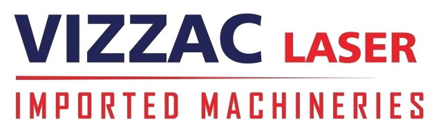

Loading...
Tiruppur
+91 8048601652
vizzaclasers@gmail.com

Home
About
Services
Products
CO2 LASER CUTTING MACHINE
LASER MARKING MACHINE
FIBER LASER CUTTING MACHINE
CHAIN LINK FENCING MACHINE
ROLL FORMING
Our Blog
Our Team
Testimonial
Contact
Our Products
← Back to Projects